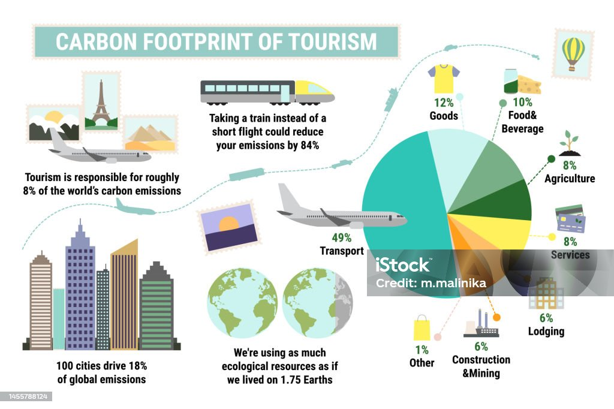
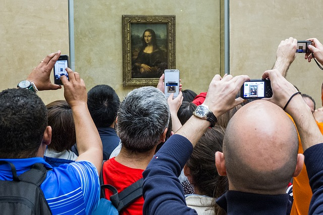

Turismo: ¿la mejor industria del mundo o un problema sin resolver?

Seguro que has oído frases como "el turismo es la fábrica de nuestro país" o "vivimos del turismo". Y es verdad: en España, y especialmente en Andalucía, el turismo es una de las actividades económicas más importantes. Genera trabajo, mantiene hoteles y restaurantes, y permite que mucha gente viva de ello.
Pero… ¿es todo tan bonito como parece en los folletos?
Imagina que vives en un pueblo pequeño y tranquilo. De repente, llegan miles de turistas cada verano. Las calles se llenan, aparcar se convierte en una odisea, los precios suben, y los bares y tiendas que antes eran para los vecinos ahora solo venden productos para turistas. Tus abuelos ya no pueden permitirse comer en el sitio de siempre. El pueblo ya no se parece al que conocías.
Esto es lo que está pasando en muchos lugares del mundo. El turismo tiene ventajas, pero también inconvenientes muy serios.
¿Qué es el turismo sostenible?
El turismo sostenible es una forma de viajar y de organizar el turismo que intenta no destruir lo que visita. Se basa en tres pilares, como un taburete de tres patas:
- Medioambiental. Cuidar la naturaleza, no contaminar, no generar montañas de basura. Ej.: Hoteles que usan energías renovables, excursiones que no dañan los ecosistemas
- Social. Respetar a la población local, no expulsar a los vecinos de sus casas, crear trabajos dignos. Ej.: Turismo que compra productos locales, que no sube los precios de la vivienda
- Económico. Que el dinero del turismo se quede en la zona y beneficie a todos, no solo a grandes empresas. Ej.: Pequeños negocios familiares, artesanos, agricultores que venden a los turistas
Un destino turístico sostenible es aquel que puede seguir siendo turístico dentro de 50 años sin haberse convertido en un parque temático vacío.
Los impactos negativos del turismo (no todo es dinero fácil)
No queremos ser catastrofistas, pero es importante que conozcas la otra cara de la moneda. Estos son algunos de los problemas que genera el turismo cuando no se planifica bien:
| Problema | En qué consiste | Ejemplo real |
| Masificación | Tanta gente en el mismo sitio que la experiencia deja de ser agradable y el lugar se satura | Venecia (Italia) llega a tener más turistas que habitantes. Las calles se llenan y los vecinos se han ido |
| Contaminación | Aviones, coches, cruceros y hoteles consumen mucha energía y generan basura | Un crucero puede generar la misma contaminación que 10.000 coches en un día |
| Pérdida de identidad local | Los comercios tradicionales cierran para abrir tiendas de souvenirs. Las costumbres se convierten en un "espectáculo" para turistas | Barrios enteros de Barcelona o Palma de Mallorca han perdido sus tiendas de toda la vida |
| Subida de precios de la vivienda | Los pisos se alquilan a turistas (Airbnb) en lugar de a vecinos. Los jóvenes no pueden permitirse vivir en su propio pueblo | En el centro de Málaga o Cádiz es muy difícil encontrar un piso de alquiler asequible |
| Dependencia económica | Si un día deja de venir el turismo (por una crisis, una pandemia o una catástrofe), toda la economía se hunde | En 2020, con la pandemia del COVID-19, muchos pueblos turísticos se quedaron sin ingresos de la noche a la mañana |

Pero no todo es malo: ¿para qué sirve el turismo bien hecho?
También hay que reconocer sus ventajas. Un turismo bien planificado puede:
- Crear empleo: hoteles, restaurantes, guías, transportes, limpieza…
- Poner en valor el patrimonio: restauración de monumentos, museos, parques naturales.
- Mejorar infraestructuras: aeropuertos, carreteras, servicios públicos que también usa la población local.
- Evitar la despoblación: en muchos pueblos pequeños, el turismo rural ha evitado que la gente se tuviera que ir a la ciudad.
El problema no es el turismo en sí, sino cómo se hace.
Caso práctico
- Duración
- 60:00
- Agrupamiento
- Grupos de 4
Presta atención a estas dos noticias:
En grupos de 4, junto a tus compañeros, redacta cuáles son los aspectos negativos detectados en el vídeo de protestas contra el turismo de masas en algunas partes de España. Por otro lado, aporta aspectos positivos que puede aportar este tipo de turismo si fuese sostenible. Para ello, en el Padlet creado para este proyecto, crea un apartado con esos aspectos negativos encontrados. Explícalos. Añade el nombre de los integrantes del grupo.